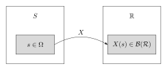
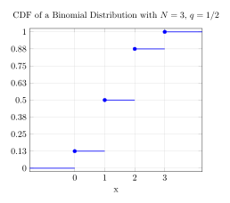
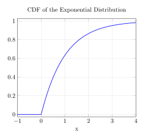
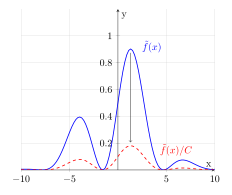
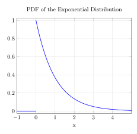

(1/54201)*25000 + (1/1032)*1000 + (1/57)*(50)[1] 2.307431Wrapping up Probability Basics
Lab is today in FXB G10.
Office hours for Miller will be set to Thursdays at 1-2pm.
If we go back to the formula for sampling with replacement, the \(-1\) term comes from the fact that when converting from the number of bins we could put balls into to the number of dividers between the bins, there’s one less divider than there are bins.
That formula was \[ {n + k - 1 \choose k} \] so we could think about how to put \(k\) balls into \(n\) bins, or instead \(k\) balls into \(n-1\) dividers, or we could think about there being \(n-1\) blue balls and \(k\) red balls and the blue balls represent the dividers, so now we’re describing choosing \(k\) balls to be red out of \(n + k - 1\) balls.
When the pot reached $5M, a “rolldown” occurred in which the prizes for matching 3, 4, or 5 numbers were 10x higher.
| Match Number | 6 | 5 | 4 |
|---|---|---|---|
| Probability | 1/13,983,815 | 1/54,201 | 1/1032 |
| All prizes (in 2 years) | 15 | 2158 | 117685 |
| Prize (normal) | Jackpot | $2,500 | $100 |
| Prize in Fall | Jackpot not hit | $25,000 | $1,000 |
If there were a rolldown in the WINfall lottery, we’d have an expected return on a single ticket as:
(1/54201)*25000 + (1/1032)*1000 + (1/57)*(50)[1] 2.307431The Hypergeometric\((N,K,n)\) distribution gives the probability of matching \(k\) numbers from a set of \(K\) winning numbers when selecting \(n\) from a set of \(N\) total.
We often say distribution instead of probability measure.
In the Winfall lottery, \(N = 49\), \(K=6\), and \(n=6\), and the outcome is the number of matches \(k\).
Letting \(P\) denote the Hypergeometric\((N,K,n)\) distribution, \[P(\{k\}) = \frac{{K \choose k}{N - K \choose n - k}}{N \choose n}.\]
Plugging \(k=3, k=4, k=5, k=6\) into this formula yields the probabilities in the above table.
What’s the probability of drawing 4 cards from a deck and getting 4 aces?
The number of possible hands of 4 cards is \({52 \choose 4}\).
Thus the probability of getting all 4 aces is
\[\frac{1}{52 \choose 4} = \frac{4!48!}{52!}.\]
Or we could think about it sequentially: The probability of drawing an ace on the first card is \(4/52\), the next is \(3/51\), then \(2/50\), and \(1/49\) each conditioned on assuming we previously drew an ace card.\[ \frac{4}{52} \times \frac{3}{51} \times \frac{2}{50} \times \frac{1}{49} = \frac{4!48!}{52!} = \frac{4! \cancel{48 \cdot 47 \cdots 1}}{52 \cdot 51 \cdot 50 \cdot 49 \cdot \cancel{48 \cdot 47 \cdots 1}} \]
Definition. The conditional probability of \(A\) given \(B\) denoted \(P(A|B)\) is
\[ P(A|B) = \frac{P(A \cap B)}{P(B)}\]
We could think of \(B\) as the event where 1 ace has already been drawn (and thus represents the scenario where \(B\) consists of all the cards except 1 ace). Then,
\[P(A | B) = \frac{P(\{ \text{Ace} \clubsuit, \text{Ace} \diamondsuit, \text{Ace} \spadesuit, \text{Ace} \heartsuit\} \cap B\})}{P(B)} = \frac{3}{51} \]
\[P(A|B) = \frac{P(A \cap B)}{P(B)}.\]
Multiplying by \(P(B)\) yields:
\[P(A \cap B) = P(A|B) P(B).\]
By symmetry, \[P(A \cap B) = P(B|A) P(A).\]
If \(P(A) > 0\) and \(P(B) > 0\), then \[P(A|B) = \frac{P(B|A) P(A)}{P(B)}.\]
If \(A_1, A_2, ...\) form a partition of the sample space then
\[P(A_i |B) = \frac{P(B|A_i) P(A_i)}{\sum_{j=1}^\infty P(B|A_j) P(A_j)}.\]
On a game show, there are 3 doors. Behind one door is a car, and behind the other two doors are goats. You win whatever is behind the door you select. First you pick door #1. The game show host then reveals that there is a goat behind door #3. The host then asks “Do you want to stay with #1 or switch to #2?” What would you do and why?
It turns out you should always switch. Let \(D_1, D_2, D_3\) denote the events that the car is behind door 1, 2, or 3. Let \(M_1, M_2, M_3\) denote the event that Monty opens door 1, 2, or 3, respectively.
We will assume that there’s equal probability of the car being behind 1, 2, or 3. Additionally, we will assume that he always opens a door that is not the one you picked and which does not have the car behind it.
By assumption \[P(D_1) = P(D_2) = P(D_3) = 1/3.\]
\[P(M_j|D_1) = (1/2) \mathbb 1 (j \in \{2,3\})\] \[P(M_j|D_2) = \mathbb 1 (j = 3)\] \[P(M_j|D_3) = \mathbb 1 (j = 2)\]
Here’s a table of the probability of each possible combination \(i,j\) of door that the car is behind \((i)\) and the door opened by Monty \((j)\):
| Open #1 | Open #2 | Open #3 | |
|---|---|---|---|
| Car in #1 | 0 | 1/6 | 1/6 |
| Car in #2 | 0 | 0 | 1/3 |
| Car in #3 | 0 | 1/3 | 0 |
By the law of total probability, the probability that Monty opens door #3 is
\[P(M_3) = \sum_{i=1}^3 P(M_3|D_i) P(D_i) = \frac{1}{2} \times \frac{1}{3} + 1 \times \frac{1}{3} + 0 \times \frac{1}{3} = \frac{1}{2}.\]
So by Bayes’ rule the conditional probability of the car being behind door #1, given Monty opened door #3, is
\[P(D_1|M_3) = \frac{P(M_3|D_1) P(D_1)}{P(M_3)} = \frac{(1/2) \times (1/3)}{1/2} = \frac{1}{3}\]
Meanwhile, the conditional probability of the car being behind door #2 given that Monty opened door #3 is
\[P(D_2 | M_3) = \frac{P(M_3|D_2) P(D_2)}{P(M_2)} = \frac{1 \times (1/3)}{(1/2)} = \frac{2}{3}\]
What’s wrong with the following reasoning?
We can think of the sample space as \(\{1,2,3\}\) and the outcome as the number that the door is behind, so \(D_i = \{i\}.\)
By conditioning on Monty opening door #3, we are conditioning on the event that the car is behind #1 or #2, that is \(M_3 = D_3^c = \{1,2\}\). Therefore
\[ P(D_1 | M_3) = \frac{P(D_1 \cap M_3)}{P(M_3)} \] \[ = \frac{P(\{1\} \cap \{1,2\})}{P(\{1,2\})} \] \[ = \frac{1/3}{2/3} = \frac{1}{2}.\]
Further, \(P(D_2|M_3) = 1 - P(D_1 | M_3) = 1/2\) so we gain nothing by switching to door #2.
The problem is that this doesn’t condition on the fact that Monty will never choose the door with the car. In other words, the door Monty picks depends on your choice: when your door contains a goat, Monty only has one choice: the remaining door with a goat.
In essence, we need to define the joint-distribution of \(D_i\) and \(M_j\).
The intuition is that the probability gets squished into the other doors, so you get probabilities of \(1/3\) and \(2/3\).
If we had a coin and we flipped it multiple times, where \(A\) represents the event where it comes up heads the first time and \(B\) is the event where it comes up heads the second time.
We would assume that \(P(B|A) = P(B)\).
By Bayes’ theorem, \(P(B|A) = P(A \cap B)/P(A)\), that implies that \(P(A \cap B) = P(A)P(B)\). When this holds, we say that \(A\) and \(B\) are independent.
One difference is that the second statement doesn’t require that \(P(A)\) is nonzero, but the definition using \(P(B|A)\) does.
If \(A\) and \(B\) are independent, then so are \(A\) and \(B^c\), \(A^c\) and \(B\), and \(A^c\) and \(B^c\).
Events \(A_1, ..., A_n\) are mutually independent if \[P(\cap_{i \in I} A_i) = \prod_{i \in I} P(A_i)\] for every subset \(I \subset \{ 1, ..., n \}.\)
You might think that \(P(A_1 \cap \cdots \cap A_n) = P(A_1) \cdots P(A_n)\) would be a simpler definition of independence of multiple events, but this is not correct. See Casella & Berger (1.3.10).
We have only been so far considering events and outcomes in the sample space \(S\). Often it’s most useful to work with functions of the outcome.
For instance, suppose a coin is tossed \(N\) times.
A natural definition of the sample space would be \(S = \{ 0, 1 \}^N\), that is all sequences of \(N\) zeroes or ones.
Define \(X\) to be the number of times that heads comes up.
If we only want to evaluate whether the coin is biased, we may as well work with \(X\) rather than the whole sequence.
\(X\) can be thought of as a function from the sample space \(S\) to the set of integers.
Definition. A random variable \(X\) is a function from the sample space equipped with sigma algebra \(\Omega\) to the real numbers \(X: S \to \mathbb R\). Technically it must be a measurable function, that is \(X^{-1}(A)\) must be a measurable set for all measurable sets \(A \in \mathcal B(\mathbb R)\). But we won’t worry about this so much in this course.

In other words, when the outcome is \(s \in S\), the random variable takes the value \(X(s)\) which is some real number.
The probability that \(X\) takes value \(x\), denoted \(P(X=x)\), is \[P(X=x) = P(\{s \in S \colon X(s) = x \})\]
In the coin tossing example, if \(s = (s_1, ..., s_N) \in S = \{0,1\}^N\), then the number of heads \(X(s) = \sum_{i=1}^N s_i\).
If the probability of heads is \(q \in (0,1)\), then
\[P(\{s\}) = \prod_{i=1}^N q^{s_i}(1-q)^{1-s_i} = q^x (1-q)^{N-x}\]
where \(x = \sum_{i=1}^N s_i\). Let \(X(s) = \sum_{i=1}^N s_i\).
The probability of getting heads \(x\) times in \(N\) coin tosses is
\[P(X=x) = P(\{ s \in S \colon X(s) = x \}) = \sum_{s \in S} P(\{ s\}) \mathbb 1(X(s) = x)\] \[ = \sum_{s \in S} q^x (1-q)^{N-x} \mathbb 1 (X(s)=x)\] \[ {N \choose x} q^x (1-q)^{N-x}\]
\(X\) is said to follow the binomial distribution with parameters \(N\) and \(q\). This is denoted by writing \(X \sim \text{Binomial}(N,q)\).
We often think of \(X\) as a random quantity, but formally it is a function.
Exercise 1. Prove a generalized Bonferroni inequality:
\[ P \left( \cap_{i=1}^n A_i \right) \geq \sum_{i=1}^n P(A_i) - (n-1) \quad \text{ for any events } A_1, ..., A_n.\]
Proof 1. We proceed by induction. The base case is clear: \(P(A_1) \geq P(A_1) - (1-1)\).
Assume an inductive hypothesis: \[P(\cap_{i=1}^n A_i) \geq \sum_{i=1}^n P(A_i) - (n-1).\]
Now we can write that \[P\left(\bigcap_{i=1}^{n+1} A_i \right) = P\left(A_{n+1} \cap \bigcap_{i=1}^n A_i \right).\]
Recall Boole’s inequality: \(P(B \cap A^c) = P(B) - P(A \cap B)\), and then let \(B = \cap_{i=1}^n A_i\) and \(A^c = A_{n+1}\). Then \[\begin{aligned} P\left(A_{n+1} \cap \bigcap_{i=1}^n A_i \right) & = P\left(\bigcap_{i=1}^n A_i\right) - P\left(A^c_{n+1} \cap \bigcap_{i=1}^n A_i\right) \\ & \geq \sum_{i=1}^n P(A_i) - (n-1) - P\left(A^c_{n+1} \cap \bigcap_{i=1}^n A_i \right). \quad (\star) \end{aligned}\]
Now let’s apply Boole’s inequality again to the right-most probability, this time letting \(B = A^c_{n+1}\) and \(A^c = \bigcap_{i=1}^n A_i\).
\[ P\left(A^c_{n+1} \cap \bigcap_{i=1}^n A_i \right) = P(A^c_{n+1}) - P\left(A^c_{n+1} \cap \left( \bigcap_{i=1}^n A_i\right)^c \right). \]
Applying the fact that \(P(A) = 1-P(A^c)\) for any set \(A\), we then have that \[P(A^c_{n+1}) = 1 - P(A_{n+1}) \quad (\star) \]
Substituting that back in, we have that:
\[ P\left(A^c_{n+1} \cap \bigcap_{i=1}^n A_i \right) = 1 - P(A_{n+1}) - P\left(A^c_{n+1} \cap \left( \bigcap_{i=1}^n A_i\right)^c \right). \]
And then substituting that back into \((\star)\):
\[P\left( \bigcap_{i=1}^{n+1} A_i \right) \geq \sum_{i=1}^n P(A_i) - (n-1) - \left[ 1 - P(A_{n+1}) - P\left(A^c_{n+1} \cap \left( \bigcap_{i=1}^n A_i\right)^c \right) \right] \] \[ = \sum_{i=1}^n P(A_i) - (n-1) - 1 + P(A_{n+1}) + P\left(A^c_{n+1} \cap \left( \bigcap_{i=1}^n A_i\right)^c \right) \] \[ = \sum_{i=1}^{n+1} P(A_i) - (n+1-1) + \underbrace{P\left(A^c_{n+1} \cap \left( \bigcap_{i=1}^n A_i\right)^c \right)}_{\geq 0 \, \text{ by the axioms of probability}} \] \[ \geq \sum_{i=1}^{n+1} P(A_i) - (n+1-1) \]
This concludes the proof.
Proof 2. We proceed by proof by contradiction: Assume that \[P\left( \bigcap_{i=1}^n A_i \right) < \sum_{i=1}^n P(A_i) - (n-1)\] \[P\left( \bigcap_{i=1}^n A_i \right) < 1 - n + \sum_{i=1}^n P(A_i)\] \[P\left( \bigcap_{i=1}^n A_i \right) < 1 - n + \sum_{i=1}^n 1 - P(A_i^c)\] \[P\left( \bigcap_{i=1}^n A_i \right) < 1 - n + n - \sum_{i=1}^n P(A_i^c)\] \[P\left( \bigcap_{i=1}^n A_i \right) < 1 - \sum_{i=1}^n P(A_i^c)\]
But this contradicts (the un-generalized version of) Bonferroni’s inequality. \(\rightarrow \leftarrow\). This concludes the proof.
Exercise 2. Given \(B \subset C\) and \(P(B) > 0\), prove that \[P(A | C) > P(A | B) \Longleftrightarrow P(A | C \cap B^c) > P(A | B).\]
Exercise 3. Prove or disprove the following statement: For events \(A\) and \(B\) such that \(0 < P(A) < 1\) and \(0 < P(B) < 1\), \[P(A|B) > P(A) \Longleftrightarrow P(B | A) > P(B|A^c).\]
1-2pm Office Hours for Miller, Building 1 Room 245
If the range of a random variable \(\{X(s) : s \in S \}\) is countable then \(X\) is a discrete random variable.
For a discreet random variable, the function \(f(x) = P(X = x)\) is called a probability mass function.
Recall how we define probability on random variables: \[P(X = x) = P(\{ s \in S : X(s) = x \})\]
The cumulative distribution function (cdf) of \(X\) is defined to be \[F(x) = P(X \leq x).\]
Definition. A function \(F \colon \mathbb R \to \mathbb R\) is a cdf if and only if
Here’s an example for a binomial distribution:

For any discrete probability distribution, the cdf will necessarily be discontinuous.
An example of a continuous cdf is \[F(x) = (1- e^{-\lambda x}) \mathbb 1 (x > 0),\] where \(\lambda\) is a positive fixed number.

A random variable is continuous if its cdf is a continuous function.
In other words, if \(\lim_{x \to x'} F(x) = F(x')\) for every \(x' \in \mathbb R\).
A probability density function of a continuous random variable function \(f: \mathbb R \to [0,\infty)\) such that for all \(x \in \mathbb R\), \[F(x) = \int_{-\infty}^\infty f(t) dt.\]
Therefore we need to integrate to get probabilities:
\[P(X \in A) = \int_A f(x) dx\]
“Randavble” = “Random Variable” (Nice abbreviation, but a joke)
Suppose we had a cdf \(F\), we could derive a pdf \(f\) by differentiating (usually).
Similarly, we can obtain \(F\) from \(f\).
If \(f(x)\) is continuous at \(x\), then \[f(x) = \frac{d}{dx} F(x),\] by the fundamental theorem of calculus.
A function \(f: \mathbb R \to [0,\infty)\) is a probability density function if and only if \(\int f(x) dx = 1\).
In fact any integrable non-negative function can be normalized to a pdf, by performing \(f(x) = \tilde{f}(x)/C\) for a constant \(C\).

There is not a unique pdf for a given distribution since the pdf can change arbitrarily on sets with Lebesgue measure 0. However, any two pdfs for the same distribution will agree “almost everywhere.”
Not every continuous distribution has a pdf, since there are continuous cdfs that are nondifferentiable at uncountably many points, such as the Cantor function.

Recall that the Exponential(\(\lambda\)) distribution is defined by the cdf: \[F(x) = (1-e^{-\lambda x}) \mathbb 1\{x > 0\}.\]
The pdf can be obtained by differentiating:
\[f(x) = \frac{d}{dx} F(x)= \lambda e^{-\lambda x} \mathbb 1 \{x > 0\}.\]
\(F(x)\) is not differentiable at 0, but it doesn’t matter since \(f(x)\) can be defined arbitrarily on any countable set.

For measurable sets \(A \subset \mathbb R\), we define \[X^{-1}(A) = \{ s \in S \colon X(s) = x \}\]
For any random variable \(X\) not necessarily discrete or continuous, we define \[P(X \in A) = P(X^{-1}(A)).\]
Random variables \(X\) and \(Y\) are identically distributed if for every measurable set \(A\), \[P(X \in A) = P(Y \in A).\]
This is denoted by \(P \stackrel{d}{=} Y\).
It turns out that \(X \stackrel{d}{=} Y\) if and only if \(F_X(x) = F_Y(x)\) for all \(x \in \mathbb R\).
Often we are interested in functions \(g(X)\) of a random variable \(X\).
If \(g\) is measurable, then \(g(X)\) is a random variable.
Letting \(Y = g(X)\), the distribution of \(Y\) is characterized by \[P(Y \in A) = P(g(X) \in A) = P(X \in g^{-1}(A)).\]
Recall that \[g^{-1}(A) = \{ x \colon g(x) \in A \},\] so this does not require that \(g\) be invertible.
In the discrete case,
\[f_Y(y) = P(Y = y) = P(g(X) = y) = \sum_{x \colon g(x) = y} f_X(x).\]
Suppose \(X \sim \text{Binomial}(N,q)\) and \(Y = N - X\). Then \[P(Y = k) = P(g(X) = k) = P(N - X = k) = P(X = N-k).\]
Thus plugging in the pdf of \(X\):
\[ P(Y=k) = {N \choose N-k} q^{N-k} (1-q)^{N-(N-k)}\] \[ = { N \choose k} (1-q)^k q^{N-k}.\]
Therefore \(Y \sim \text{Binomial}(N,1-q)\).
For a continuous r.v. \(X\) we have to take more care.
If \(g\) is invertible, then you might mistakenly think the pdf of \(Y = g(X)\) equals \(f_X(g^{-1}(y))\), but this is not true in general. The reason is that the pdf \(f_Y\) is a density, not a probability.
The correct formula accounts for the derivative.
Suppose \(X\) is a continuous r.v. and let \(\mathcal X = \{ x \colon f_X(x) > 0 \}\). If \(Y = g(X)\) where \(g \colon \mathcal X \to \mathbb R\) is a strictly monotone function such that the inverse \(g^{-1}(y)\) has a continuous derivative then \[f_Y(y) = f_X(g^{-1}(y)) \left \lvert \frac{d}{dy}g^{-1}(y) \right\rvert\]
for \(y \in \mathcal Y \coloneqq \{ g(x) \colon x \in \mathcal X \}\) and \(f_Y(y) = 0\) elsewhere.
“This is a great source for exam problems!”
A function is monotone increasing if \[x < x' \Longrightarrow g(x) \leq g(x').\] We also call this non-decreasing.
Similarly, a function is monotone decreasing (or non-increasing) if \[ x < x' \Longrightarrow g(x) \geq g(x').\]
Note that Casella and Berger use “monotone” to imply strictly monotone, though the definitions above are the more conventional meaning.
Suppose \(X \sim \text{Exponential}(\lambda)\) and \(Y=\sqrt{X}\).
Then \(f_X(x) = \lambda \exp(-\lambda x) \mathbb 1 \{ x > 0 \}\), so \(\mathcal X = (0,\infty).\)
We write \(Y = g(X)\) where \(g(x) = \sqrt{x}\) for \(x \in \mathcal X\).
For \(y \in \mathcal Y = (0,\infty)\), the inverse of \(g\) is \[g^{-1}(y) = y^2.\]
\[\frac{d}{dx} g^{-1}(y) = 2y.\]
Thus by the change of variables formula above,
\[f_Y(y) = f_X(g^{-1}(y)) \left\lvert \frac{d}{dx} g^{-1}(y) \right\rvert\] \[ = 2\lambda y \exp (-\lambda y^2) \mathbb 1 \{ y > 0 \}.\]